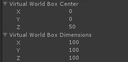

The Tracking Action takes the position and orientation of the specified tracked object and changes the transform of the game object. The Tracking Action is a Continuous Action thus you can define its start/process/stop events, as described Continuous Actions. See additionally the section for details on the action triggers.
The Constraints are a set of booleans that enable freezing the movement or rotation of the game object in a specific axis. The Invert Transform to enable inverting the movement and rotation of the object with respect to the tracked object.
The Virtual World Box defines the boundaries of the game object's movement. You can configure how the game object moves in the virtual space. When selecting a game object with a Tracking Action, the toolkit visualizes the Virtual World Box as red lines in the scene, as similar to Figure 91. You can visually fine-tune how the game object moves in between the Virtual World Box and the Real World Box.
Smoothing Factor and Smoothing Type configure the smoother interaction. The smoothing factor of zero means no smoothing. The higher the value, the stronger smoothing is imposed on the game object's movement.

Figure 91: The Virtual World Box Configuration